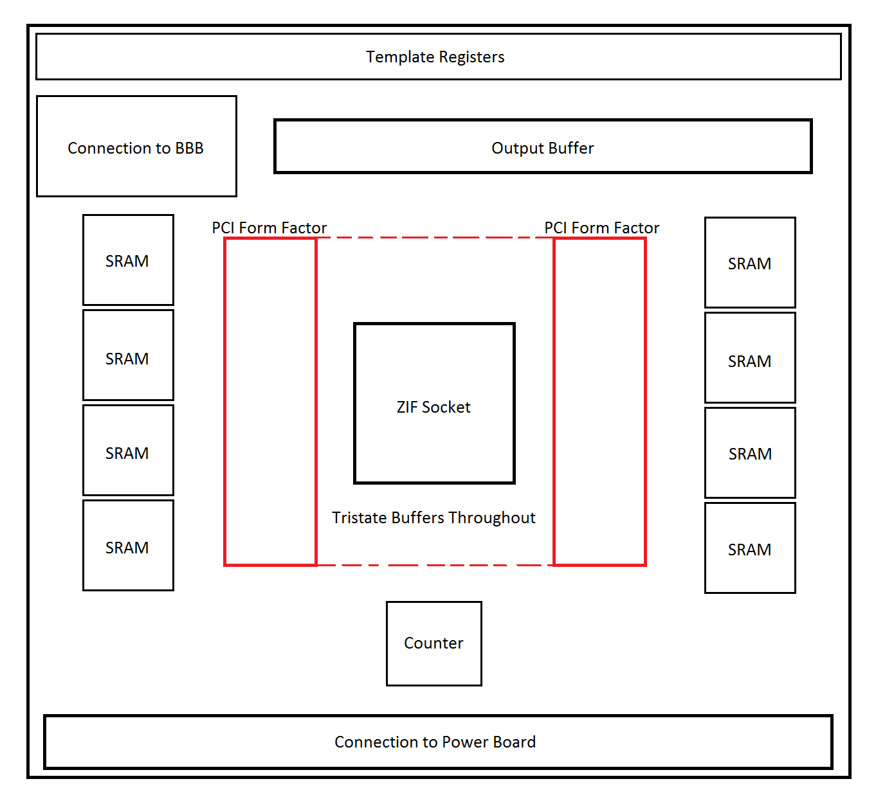

Design Work: PCBs
Schematic of Main PCB Board

Below, we describe the workings of the main PCB board, planned to be designed as a four-layer board of roughly 30 square inches.
Connection to BeagleBone Black (BBB)
The BBB can be viewed as the master device, the FPGA as the slave device. To save on pins, the BBB will command the FPGA through UART.
Communication between the master and slave devices is currently envisioned as follows:
1) The BBB first configures the power board, in order to ensure that safe voltages propagate throughout the board. Although not shown in the image above, we recognize the importance of configuring the power board before power is actually distributed across the main PCB. (When the system as a whole is booted, transient voltages in the power board may be damaging.) As such, the BBB will first configure the power board to output standard voltages (5V and 0V for VDD and GND, respectively), and then turn on switches that allow power to transfer from the power board to the main board.
2) The BBB sends over the test vectors and all template information to the FPGA device, which stores the data in its block RAM.
3) The FPGA will load the template registers (explained later) and reset the counter, and then begins testing.
4) The FPGA signals to the BBB when testing is complete. The BBB then instructs the FPGA to reset the counter and sweep the contents of SRAM into the output buffer, which the BBB will read.
It is worth noting that steps 1, 2, and 4 encompass much delay. To simplify our design, we do not worry about delay except in step 3, where real-time testing is critical. (Note that real-time testing is interrupted whenever template registers have to be switched.)
Template Registers, Tristate Buffers, and Force Formats
External tristate buffers are used in order to prevent dangerous voltage levels from reaching the FPGA itself. The template registers simply contain a 0 or 1 for whether a corresponding pin on the FPGA is configured to be an input or output. Force format data is stored in the FPGA itself, as the logic for force formats is internal to the FPGA.
PCI Form Factors
In order to create space for tristate buffers on the top-side of the PCB, PCI form factors are mounted on the bottom-side of the board. These form factors should facilitate detaching the FPGA and its shield from the main PCB when needed.
Counter and SRAM Blocks
The FPGA will control and clock a counter that is used to address the SRAM blocks. At the end of every test vector, the voltage on all pins is sent (in pieces) to various SRAM blocks. We are aware that we need to be careful with the timing here!
ZIF Socket
Equilibrium tracing is required for the connections between the FPGA, ZIF socket, tristate buffers, and SRAM blocks. We plan on manually routing these traces.